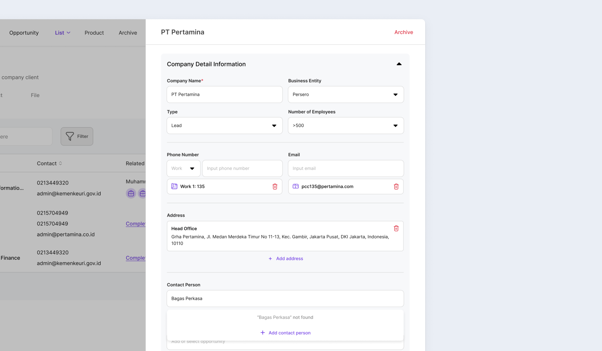
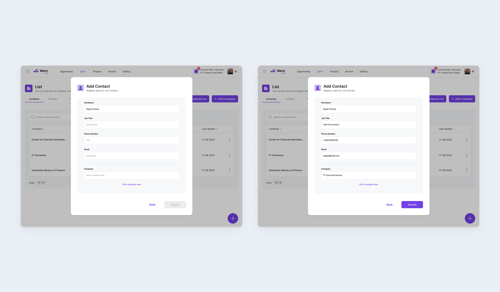
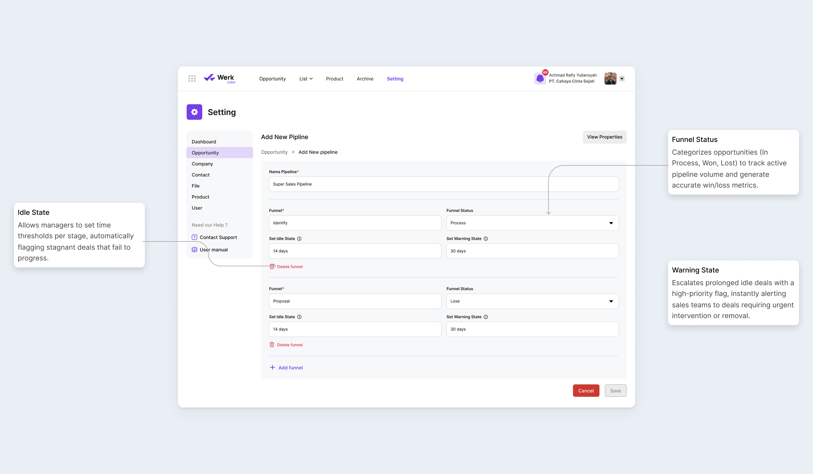
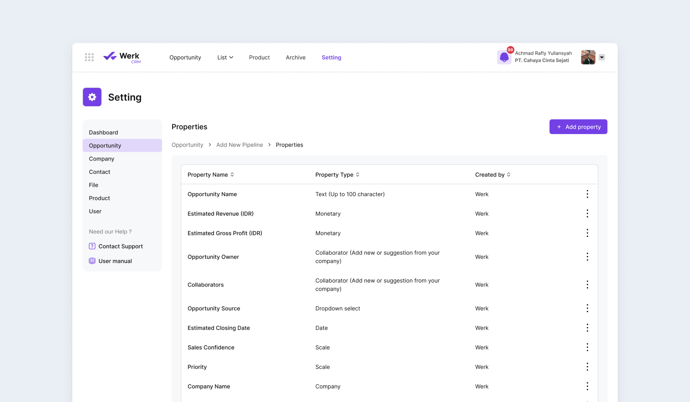
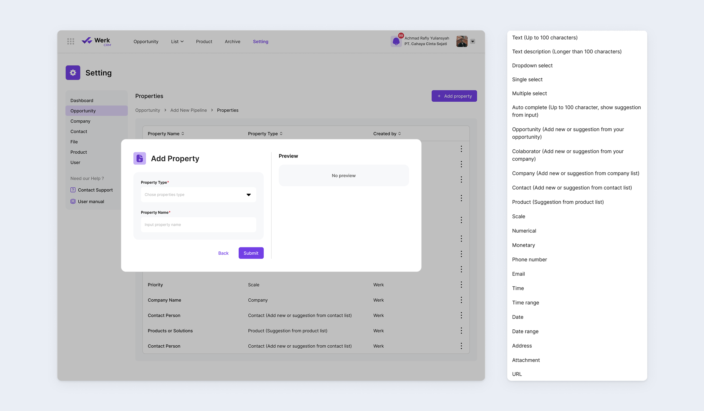

Werk: CRM
Most CRMs fail the same way: rigid workflows and high-friction data entry push sales reps back to spreadsheets the moment the tool gets in their way. Something as small as logging a missing contact can mean abandoning an active deal mid-flow, and the result is lost visibility and a database full of incomplete “ghost” records nobody trusts.
I designed a CRM architecture built on what I call Controlled Flexibility: frictionless data entry that keeps reps working inside the system instead of falling back to workarounds outside it.
Inline Quick Add
Forcing sales reps to abandon an active Opportunity form just to log a missing contact kills momentum, but letting them skip fields entirely creates useless “ghost data” that corrupts the CRM. I designed an “Inline Quick Add” modal that lets users create linked profiles on the fly without leaving their primary task, enforcing a Minimum Viable Data (MVD) threshold so every new record stays actionable without slowing anyone down.
The Quick Add Modal
When a user searches for a company or contact that doesn’t exist yet, an “Add as new” prompt appears. Clicking it doesn’t navigate away, it opens a focused modal directly over the current form. Once saved, the modal closes and the new entity auto-populates back into the original search field, keeping the workflow uninterrupted.

Minimum Viable Data (MVD) Enforcement
To avoid cognitive overload and abandonment, the Quick Add modal strips away non-essential fields like billing addresses or tax numbers, requiring only three inputs: Entity Name, Phone Number, and Email. This captures actionable contact details instantly, deferring full profile-building to later.

Modular Pipeline & Property Architecture
Rigid CRMs push sales teams back to spreadsheets, killing centralized visibility. I architected a modular framework built on “Controlled Flexibility,” letting teams customize pipelines and data properties on top of standard templates, adapting to any business model without compromising database integrity.
Dynamic Pipeline Construction & SLA Tracking
Instead of hardcoding sales stages, I built a pipeline builder that lets users map their real-world sales funnel exactly. Each stage supports “Idle State” and “Warning State” configurations, letting managers set automated SLAs that flag stagnant opportunities and drive proactive intervention.

Custom Properties
To capture industry-specific nuances without cluttering the interface for everyone else, I designed a Property Management system: users can toggle standard properties on or off and create custom fields (text, monetary, dropdown) as needed. The CRM’s data structure grows with the business, with no backend developer required.


Outcome
The result is a CRM built to bend without breaking. Sales reps get a workflow that never asks them to choose between speed and clean data, and no deal gets abandoned mid-flow just to fix a database problem. For sales managers, the combination of custom pipelines and stage-level SLAs turns the CRM from a passive record-keeper into an active tool for catching deals before they stall. And because the system extends itself through configuration rather than code, it stays usable as the business evolves, without waiting on a developer to keep up.